WorkBuddy 是腾讯最新推出的全场景职场 AI 智能体工作台，
面向 人力资源、行政、运营、销售、研发等不同职场角色，是一款能够像真正同事一样思考、执行任务并交付结果的 AI 办公应用。
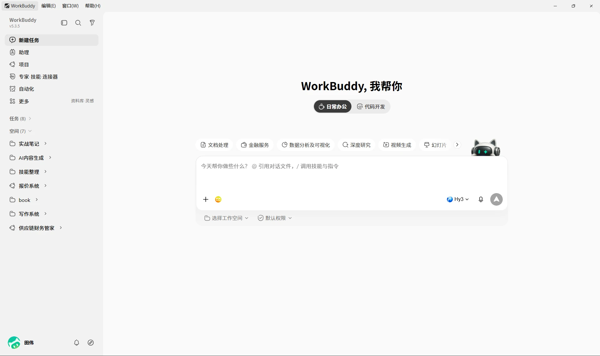
从“回答问题”到“交付结果”
与传统 AI 助手不同，WorkBuddy 不只是陪用户聊天、回答问题或者给出建议。
用户只需要用一句自然语言描述需求，它就可以理解任务目标，在本地电脑中自主规划执行步骤，并完成复杂的多模态任务。
在获得用户授权后，WorkBuddy 可以读取和处理本地文件，自动完成批量文件处理、文档生成、表格分析、PPT 制作、多模态内容创作、行业调研、本地知识库构建等工作。
对于更加复杂的任务，它还可以自主拆解步骤，并通过多个智能体（Agents）并行，减少人工在不同工具、文件和任务之间反复切换的成本。
flowchart LR
A[说清目标] --> B[读取授权资料]
B --> C[拆解任务与选择工具]
C --> D[执行并生成产物]
D --> E[人工验收]
E -->|不通过| F[指出问题并返工]
F --> D
E -->|通过| G[归档或发布]
例如，用户可以直接告诉 WorkBuddy，分析这个文件夹中的销售数据，并生成一份汇报 PPT。
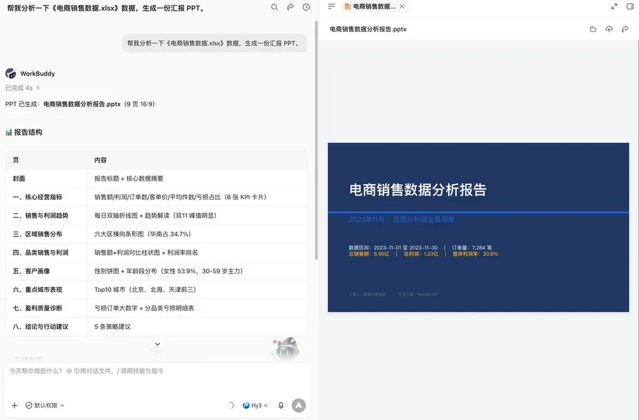
WorkBuddy 会自主读取相关文件，理解数据内容，完成分析和总结，并生成最终可以查看和修改的工作成果。
整个过程中，用户不需要手动上传每一个文件，也不需要一步一步告诉 AI 下一步应该做什么。
WorkBuddy 面向的是完整的工作任务。
它的核心能力可以概括为三点，听得懂人话，能够自主思考规划，也真的能够操作电脑交付成果。
为了完成不同类型的任务，WorkBuddy 还提供了多模型切换（混元/DeepSeek/GLM/Kimi/MiniMax 等）、MCP Server、Skills 技能包等能力。
用户可以根据不同任务选择合适的模型，也可以通过 MCP 和 Skills 扩展 WorkBuddy 的工具和专业能力。
同时，针对本地文件操作、终端执行等场景，WorkBuddy 还提供高危指令拦截和权限控制机制，降低 AI 自主执行过程中的风险。
想对workbuddy打分，可以去观猹，写出你对workbuddy的真实评价～
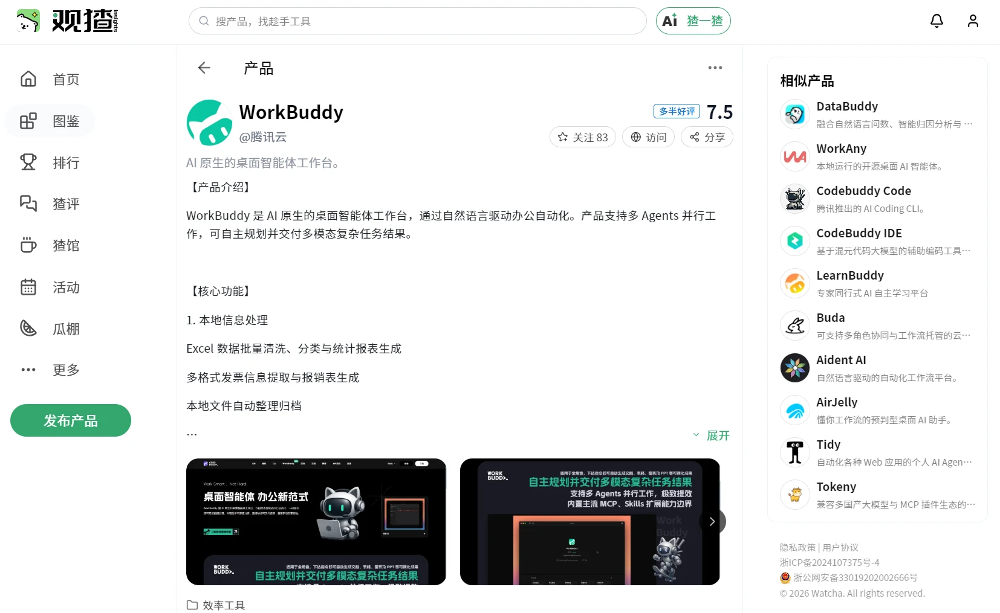
WorkBuddy下载
下载WorkBuddy，点击官方地址（https://www.codebuddy.cn/work/），选择WorkBuddy，点击“下载WorkBuddy”即可下载。
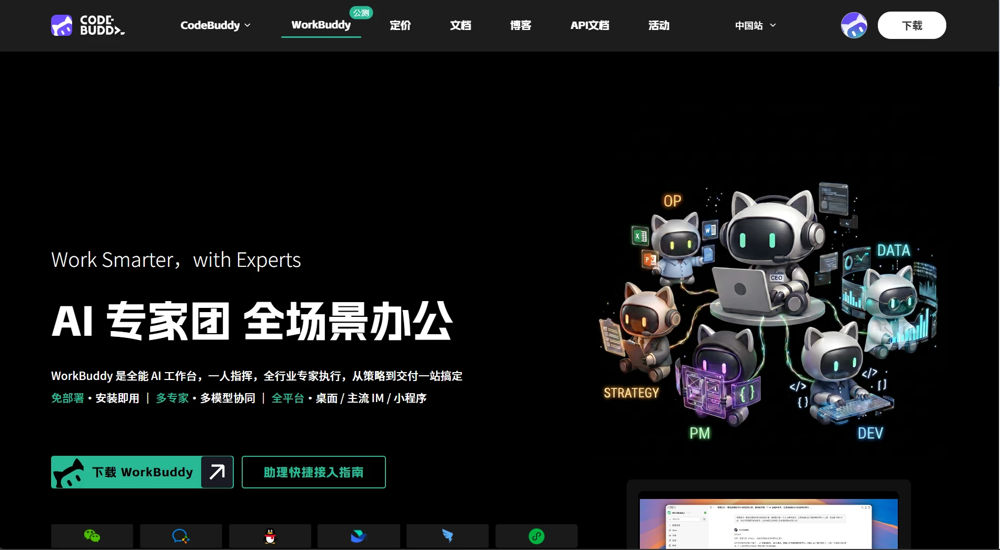
网站会自动检查你当前设备，判断你是什么版本，Mac ARM64、Mac x64或者Windows x64。
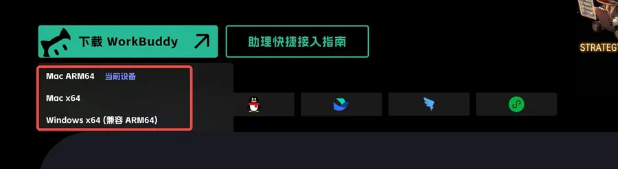
切记：从官方入口进入下载，不从网盘或不明镜像获取安装包。
Windows 安装
- 下载完成后双击安装文件。
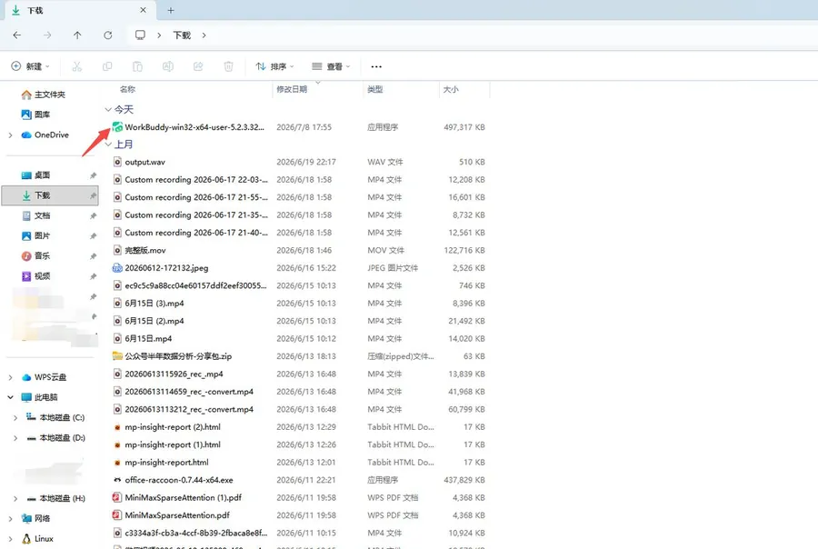
- 如系统弹出安全提示，先核对发布者与下载来源，再决定是否继续。
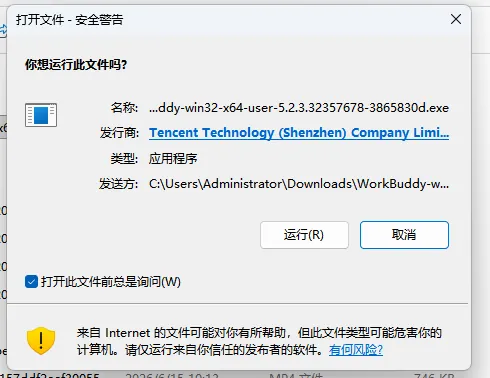
- 按安装向导完成安装并启动 WorkBuddy。
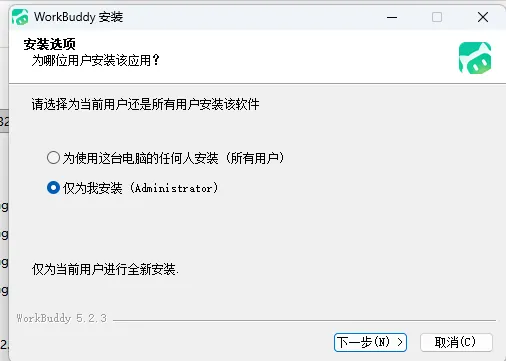
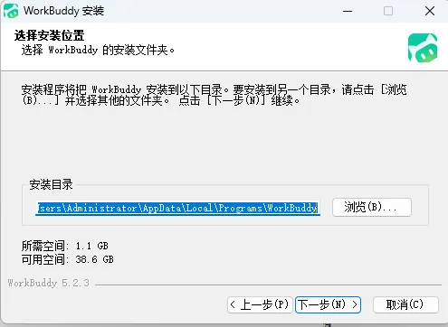
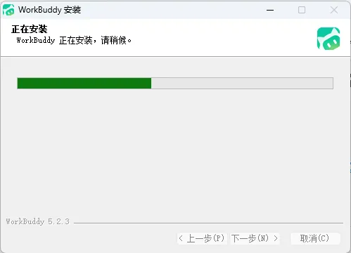
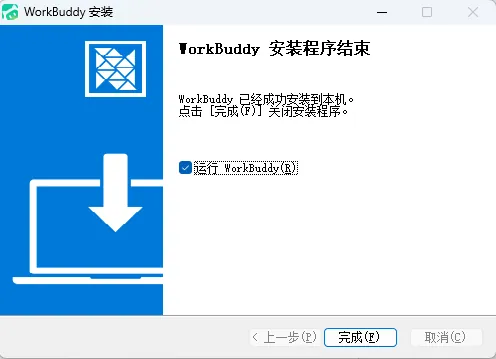
- 进入准备运行环境
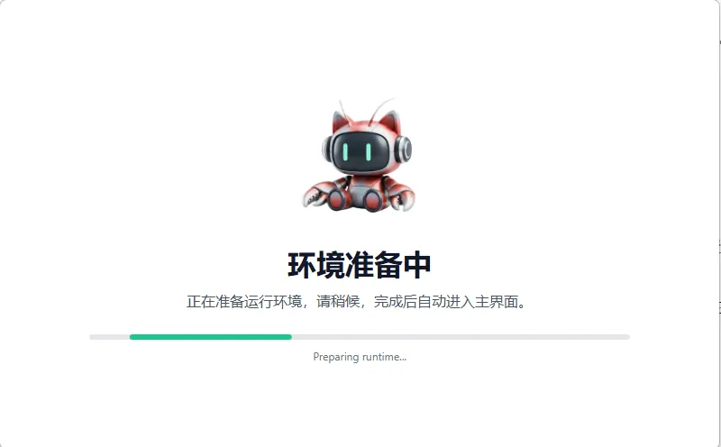
macOS 安装
- 打开安装文件，将 WorkBuddy 拖入“应用程序”；
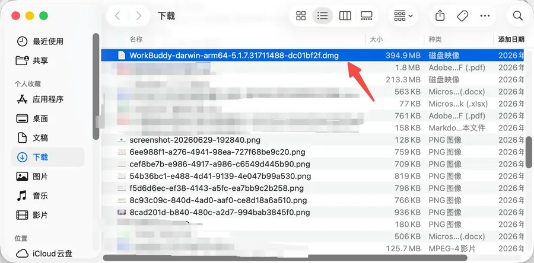
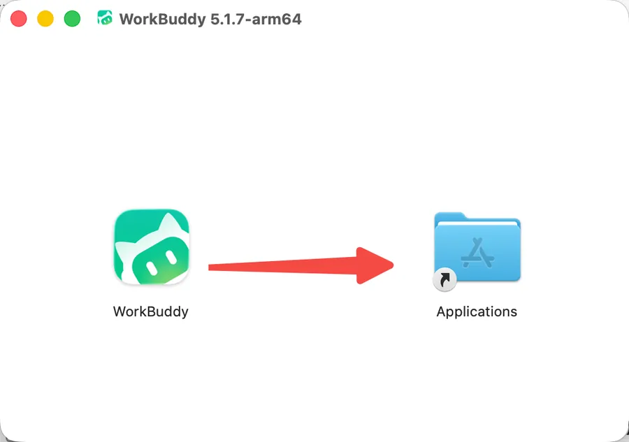
- 从“应用程序”启动；
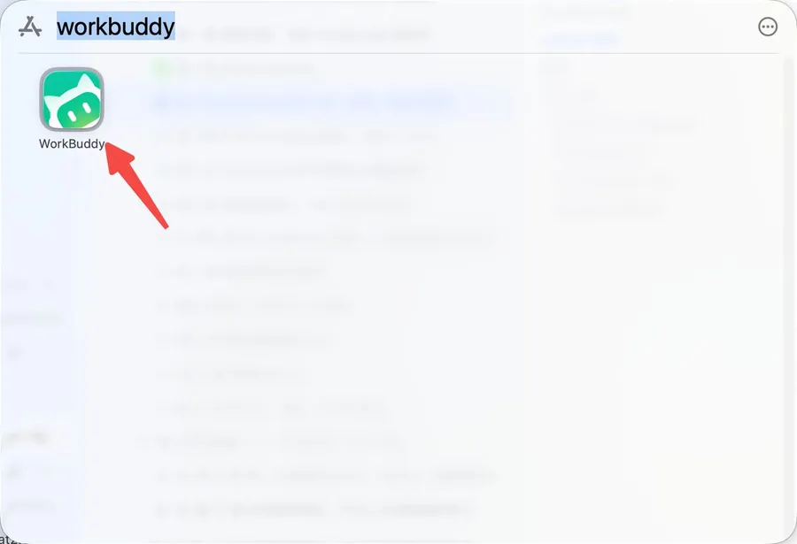
登录
点击登录按钮
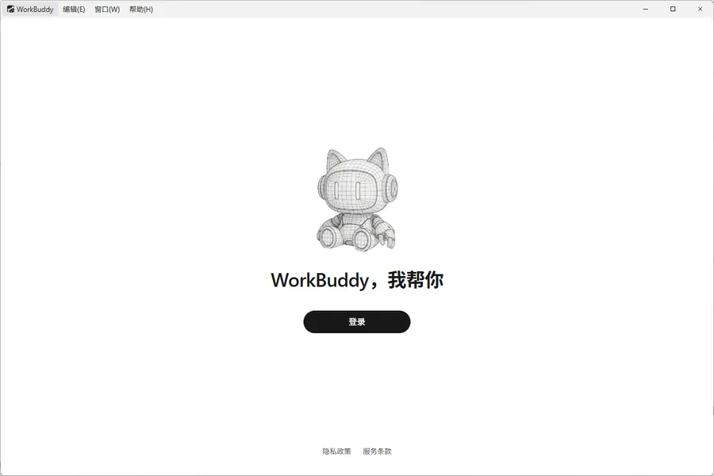
自动跳转网页登录
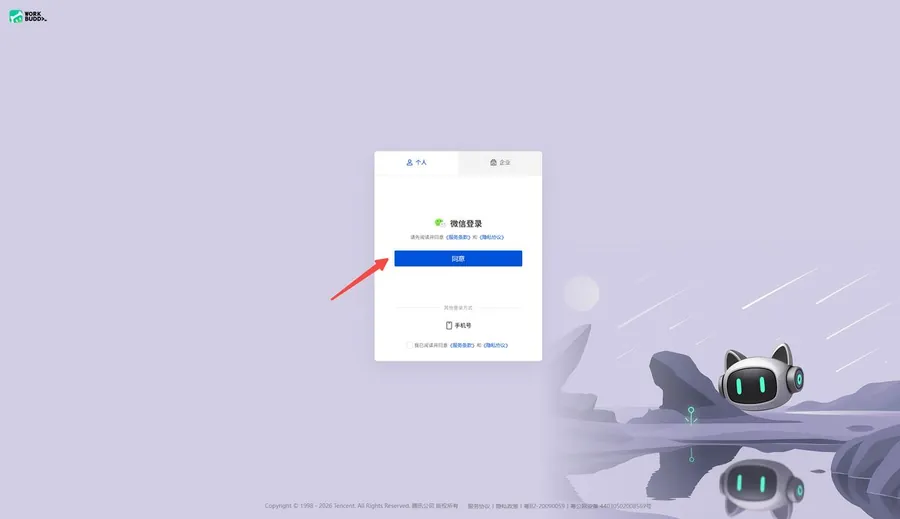
选择微信扫码登录，也可以手机号登录
完成后，即可使用WorkBuddy进行工作
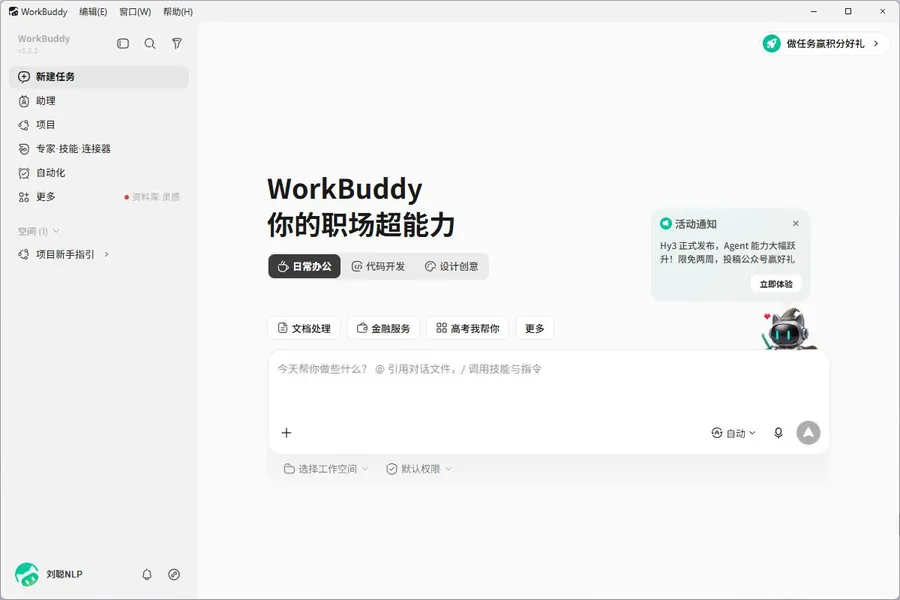
PS：若公司电脑禁止安装软件，不要绕过终端安全策略，应联系 IT 管理员确认白名单或企业部署方式。
更新
点击左下角个人中心，选择“检查更新”，检查是否有新版本，若有新版本，可更新
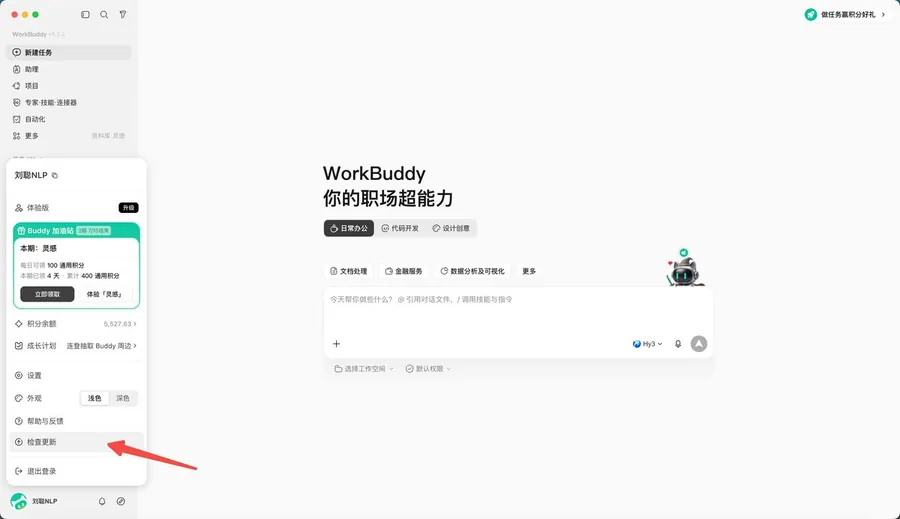
常见问题
安装包打不开或提示损坏
先删除安装包并从官网重新下载，核对系统和芯片版本。仍失败时记录系统版本、安装包名和报错截图，通过官方反馈渠道处理，不要随意关闭系统安全功能。
登录后没有反应
检查默认浏览器是否拦截登录回跳、网络代理是否影响认证、系统时间是否准确。退出应用后重试，并保留日志与截图。
无法读取或写入文件
确认任务选择的工作目录是否正确、系统是否授予对应目录权限、文件是否被其他程序锁定。先用一个空白文本文件测试，不要直接拿重要文件反复试错。
更新前要不要备份
应用更新一般不应修改工作文件，但长期项目仍应把输入、产物、配置和自定义 Skill 纳入版本管理或定期备份。
WorkBuddy 主界面可以理解为三个区域：左侧（侧边栏）管理任务，中间（对话区）下达和追踪任务，右侧（结果区）查看文件、变更、预览和最终产物。
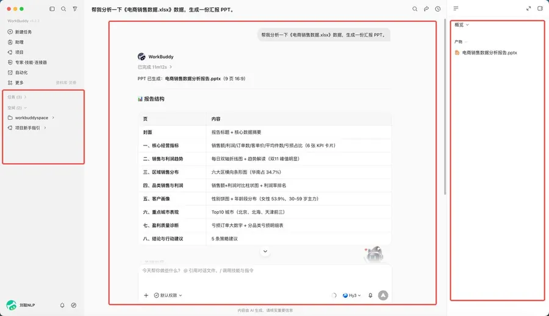
三个区域分别做什么
| 区域 | 主要用途 | 使用时重点检查 |
|---|---|---|
| 侧边栏 | 新建、搜索、切换和管理任务 | 是否进入了正确任务 |
| 对话区 | 描述需求、补充信息、确认计划 | 目标和约束是否完整 |
| 结果区 | 查看产物、全部文件、变更与预览 | 文件名、路径和改动是否符合预期 |
侧边栏的“任务”和“工作空间”的区别，在于你是否设置了“工作空间”目录。
“工作空间”是 WorkBuddy 为了管理任务而设置的目录，每个任务都有一个对应的目录空间，任务可以在目录空间内进行操作。
若未设置，会在默认安装的目录下执行任务，对话保存在“任务”目录下。
为什么要隔离工作目录
工作目录既是效率设置，也是安全边界。把发票、周报、客户材料混在同一个大目录里，会增加误读、误改和信息串用的风险。
推荐按任务建目录空间。
同时，可以对目录空间的权限进行设置，当开启“允许完全访问”（开启完全访问后智能体可读写授权目录外文件，请谨慎使用并优先按任务限定目录。）
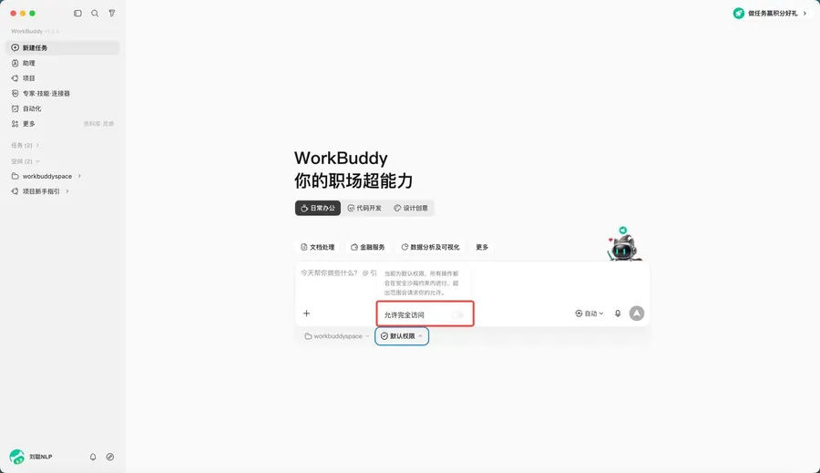
三种工作模式
WorkBuddy 提供三种工作模式：
| 模式 | 中文界面 | 能做什么 | 适合场景 |
|---|---|---|---|
| Ask | 问一问 | 问答、理解和查看，不修改文件 | 先了解资料、确认需求 |
| Craft | 做一做 | 可直接操作本地文件、运行代码及系统指令 | 路径清楚、风险较低的任务 |
| Plan | 想一想 | 先生成计划，确认后再执行 | 多步骤、跨系统、重要文件任务 |
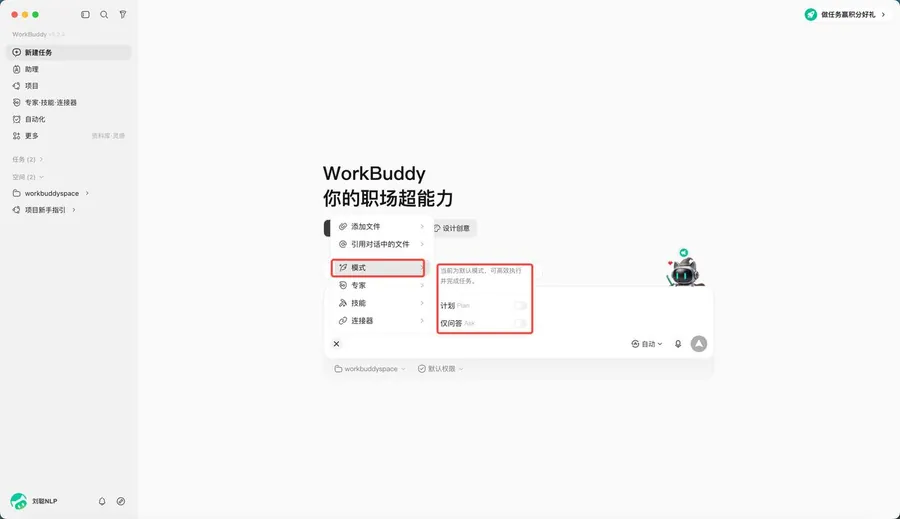
选择不同的模型
默认为自动模式，可以指定你想使用的模型，不同模型积分消耗不同。
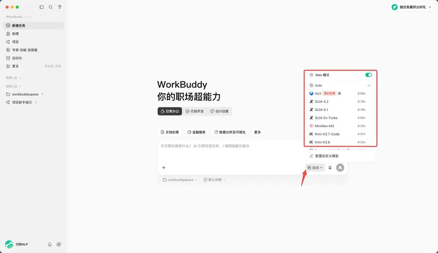
| 任务特征 | 优先关注 |
|---|---|
| 大量文本与长资料 | 上下文长度，比如 100 万 tokens（1M） |
| 图片与截图 | 需要有视觉理解能力 |
| 高频简单任务 | 优先选择响应速度快、成本较低的模型 |
快速创建一个 WorkBuddy 任务
- 点击“新建任务”；
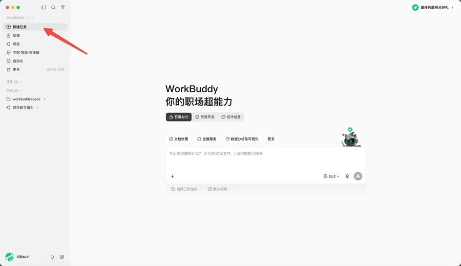
- 选择或创建独立工作目录；
PS：WorkBuddy 采用文件夹级授权与高危拦截，首次操作请先在演练目录进行、留意授权范围，处理真实业务数据前谨慎确认
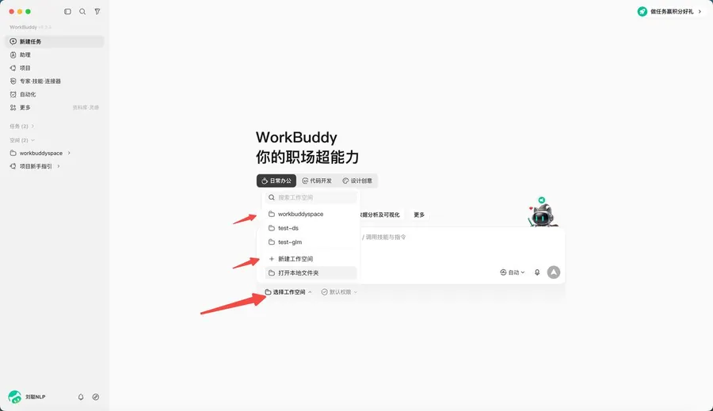
- 判断应该使用模式，默认为Craft，还可以设置成Ask或Plan；
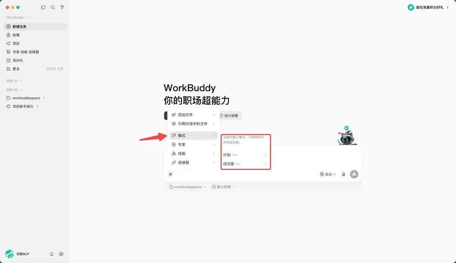
- 选择模型，可以指定你想使用的模型，不同模型积分消耗不同。
- 输入任务说明，“帮我分析一下《电商销售数据.xlsx》数据，生成一份汇报 PPT。”
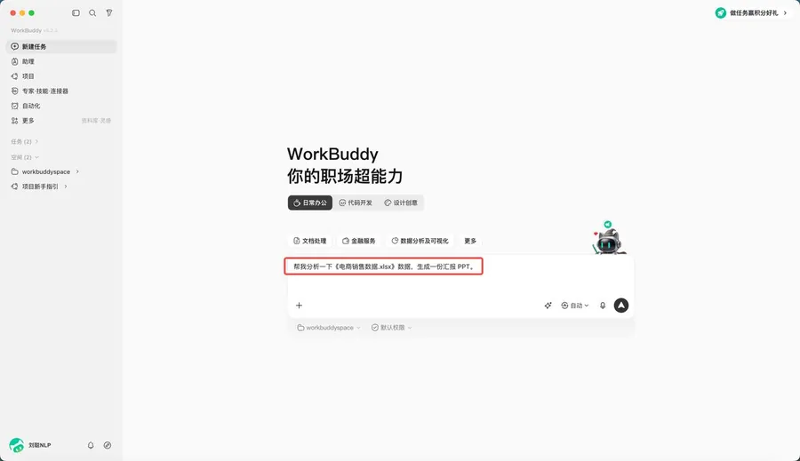
- 如有必要，指定 Skill、专家、连接器或资料库，这里暂时忽略
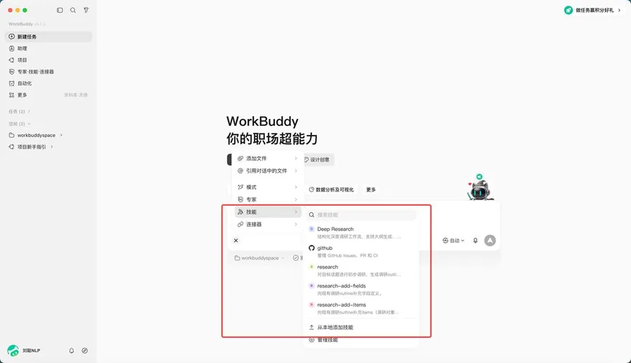
- 发送后观察计划、工具调用和文件变更；
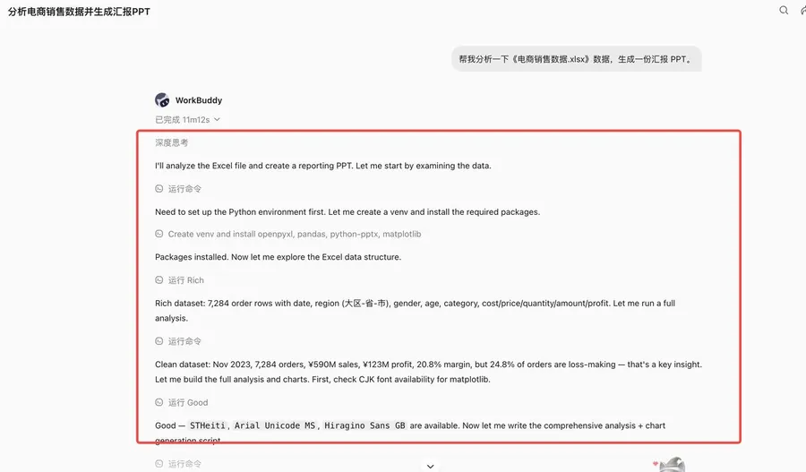
- 在结果区预览产物并验收。
文件可以本地打开、上传云端、或分享，注意分享前先确认产物不含敏感或涉密信息，按公司规范选择共享范围。
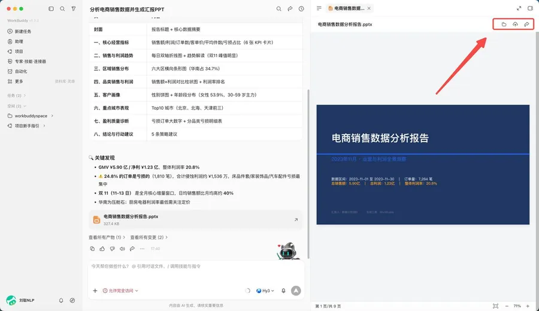
如何写一个任务说明
| 要素 | 要回答的问题 |
|---|---|
| 目标 | 最终要解决什么问题 |
| 输入 | 使用哪些文件、目录或链接 |
| 动作 | 需要分析、整理、转换还是生成 |
| 约束 | 哪些不能改，采用什么规范 |
| 输出 | 交付什么文件，放到哪里 |
| 验收 | 用什么标准判断合格 |
入门任务 A：整理文件
目标：整理 input 目录中的练习文件，便于按类型查找。
输入：仅处理当前工作区的 input 目录。
动作：识别文件类型，提出分类和重命名方案。
约束：不删除、不覆盖原文件；重名时保留两份并标记序号。
输出：先生成 inventory.xlsx 和 proposed-actions.md。
验收：清单文件数与 input 实际文件数一致，所有动作可追溯。
在我确认 proposed-actions.md 前，不移动文件。入门任务 B：生成会议纪要
请把 input/meeting.txt 整理为结构化会议纪要。
必须包含：会议结论、待办事项、负责人、截止日期、待确认问题。
不能从原文确认的负责人或日期写“待确认”，不要自行补全。
输出 output/会议纪要.md 和 output/待办清单.xlsx。
验收：每一项结论可以在原文找到依据；待办不遗漏负责人和时间状态。入门任务 C：Word 转 PPT
把 input/项目汇报.docx 转成 10 页以内的内部汇报 PPT。
受众：部门负责人；汇报时长：8 分钟。
保持原文事实和数字，不新增未经证实的数据。
结构：背景、现状、问题、方案、计划、需要决策。
使用 reference/brand-guide.pdf 中的颜色与字体规范。
输出 output/项目汇报_v1.pptx，同时提供逐页内容清单。
验收：每页只有一个核心观点，数字与原文一致，正文在投影状态可读。Skill 是什么
WorkBuddy 本身负责理解任务和组织执行；Skill 则是一组可复用的说明、脚本、参考资料和资源，告诉 Agent 某类任务应该怎样做、调用什么工具、交付什么格式。
Anthropic 在 2025 年 10 月正式推出 Agent Skills，2025 年 12 月将其发布为开放标准。
一个最标准的 Skill，大概长这样：
my-skill/
├── SKILL.md
├── scripts/
│ └── check.py
├── references/
│ └── guide.md
└── assets/
└── template.pptx其中只有 SKILL.md 是必须的。
---
name: tech-article-writing
description: 用于撰写 AI 产品、模型评测和科技行业相关文章
---
收到写作任务后：
1. 先确认文章核心角度
2. 查找一手资料
3. 对核心事实交叉验证
4. 根据用户写作风格完成初稿
5. 检查禁用句式和 AI 味表达还可以带上：
references/style.mdSkill 是怎么工作的
Skill 最关键的设计，其实不是 SKILL.md，而是 Progressive Disclosure，渐进式披露。
假设你的 Agent 装了 100 个 Skill。
它不会一上来把 100 个 Skill 的完整内容全部塞进上下文。这样不仅浪费 Token，还会让模型被大量无关指令干扰。
标准做法分三层。
第一层，Agent 启动时只看所有 Skill 的名称和 description。
比如：
pptx
处理 PowerPoint 创建、编辑、读取任务
pdf
处理 PDF 提取、合并、编辑、填写任务
tech-article-writing
撰写 AI 和科技行业文章第二层，当用户说：
帮我写一篇 WorkBuddy 的公众号文章Agent 根据 description 判断 tech-article-writing 可能相关，这时才加载完整的 SKILL.md。
第三层，执行过程中发现需要模仿你的写作风格，才继续读取：
references/style.md需要检查 AI 味，才执行：
scripts/check-ai-phrases.py标准规范建议，所有 Skill 启动时只加载数十至上百Token的元数据，Skill 激活后再加载完整说明，其他资料和脚本继续按需读取。OpenAI Codex 也采用类似机制，先向模型暴露 Skill 的名称、描述和路径，再在模型决定使用时读取完整内容。
所以 Skill 解决了一个长期困扰 Agent 的问题：
怎么给 Agent 很多知识和工作方法，又不把所有东西永远塞在 Prompt 里。
Skill 跟 Prompt 到底有什么区别
这是最核心的问题。
| 维度 | Prompt | Skill |
|---|---|---|
| 核心作用 | 描述当前任务 | 定义一类任务怎么做 |
| 生命周期 | 通常针对一次请求 | 长期复用 |
| 触发方式 | 用户主动输入 | Agent 自动选择或用户显式调用 |
| 载体 | 主要是文本 | 文件夹 |
| 内容 | 指令、上下文、示例 | 指令、脚本、资料、模板、资源 |
| 上下文占用 | 通常直接进入上下文 | 按需加载 |
| 复用 | 经常复制粘贴 | 原生可复用 |
| 分享 | Prompt 文本 | 完整能力包 |
| 执行 | 本身只是指令 | 可以调用附带脚本和工具 |
| 模型参数 | 不改变 | 同样不改变 |
最简单的理解是：
Prompt = 任务
Skill = 做法Skill 有哪些作用
**第一个作用，是给模型补充程序性知识。**大模型往往知道大量知识，但未必知道你的事情具体应该怎么做，比如它知道 SQL，但它不知道你公司的：
canonical user_id 在哪张表
subscriptions 表是 append-only
查询退款时必须排除某个状态
Grafana 对应 dashboard ID 是多少这些知识非常适合做 Skill，Anthropic 在内部使用了数百个 Skill，最终发现主要集中在 API 和内部库使用、产品验证、数据分析、业务流程自动化、代码脚手架、代码审查、CI/CD、故障 Runbook 和基础设施运维九类场景。
**第二个作用，是固定复杂工作流，**比如做一次行业调研。
普通 Prompt 可能是：
详细调研一下 WorkBuddy模型每一次都会重新思考：
去哪里找资料
先查什么
怎么验证
跟谁对比
输出什么结构Skill 可以把流程固定下来：
1. 官方网站
2. 官方公众号和发布会
3. 产品文档
4. 实际产品测试
5. 同类产品对比
6. 核心观点提炼
7. 事实核验这种能力称为 Encoded Preference Skill。模型本来能完成每一个单独步骤，但 Skill 把这些步骤按照团队或个人的工作方式组织起来。
另一类是 Capability Uplift Skill，给模型补充它原本做不好或不稳定的能力，例如复杂文档、PDF 和 PPT 处理。
第三个作用，是减少重复 Prompt。
你现在跟 AI 合作，其实有大量内容是在重复说，比如你经常告诉我：
不要写得太 AI
长短句结合
不要过度点列
要有自己的判断
技术内容要克制
不要编造例子这些其实已经天然适合做成一个 writing-style Skill。
以后你的 Prompt 只需要：
写一篇 WorkBuddy 文章写作习惯、资料标准、禁用表达、文章流程，都由 Skill 提供。
第四个作用，是把个人经验和组织经验资产化。
传统 Prompt 最大的问题是容易散落在：
聊天记录
飞书文档
Notion
个人脑子里Skill 是文件，所以它可以：
Git 管理
版本回滚
团队共享
A/B 测试
自动评测
持续更新这件事情很关键。
WorkBuddy里找到合适的Skill
打开左侧“专家·技能·连接器”，可以从技能市场搜索，也可以用“查找技能”描述需求。
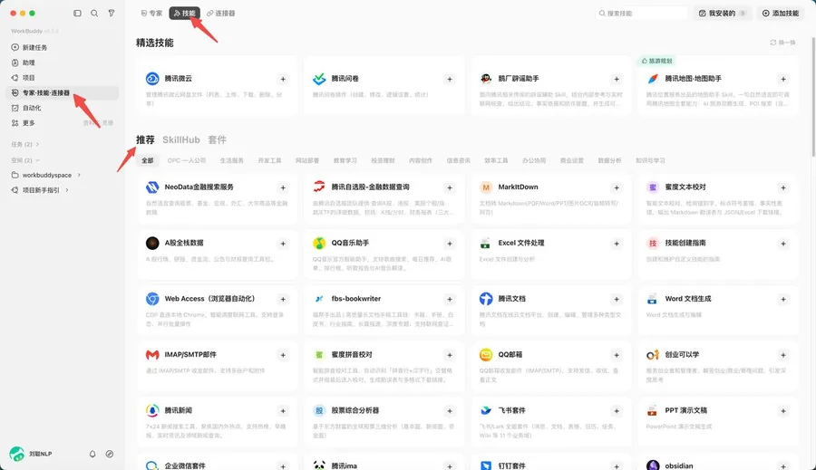
也可以在SkillHub技能市场里找到合适的Skill
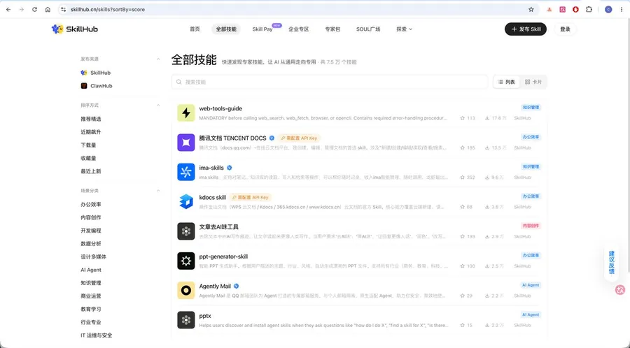
除了从推荐列表里直接安装，还可以导入自己下载的技能。
比如你在网上看到一个好用的技能包，下载下来是一个 zip 压缩文件，操作流程是这样的：点击"上传技能"，把 zip 文件加载即可
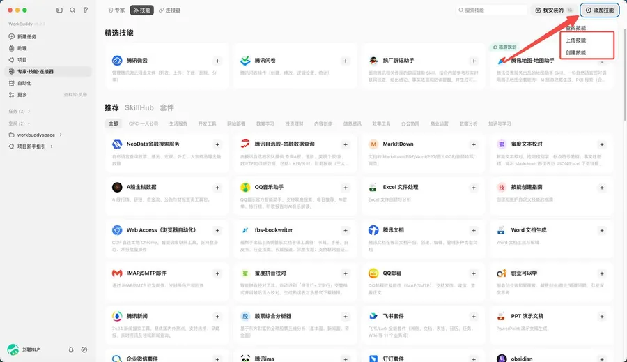
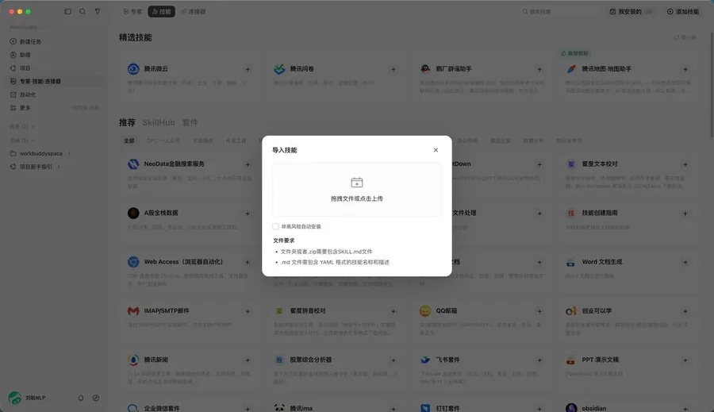
使用Skill解决一个任务
比如，你让AI写了一篇文章，需要去除AI味，你可以找到“文章去AI味工具 ”Skill，安装之后，使用时，直接 “/” 可以换出。
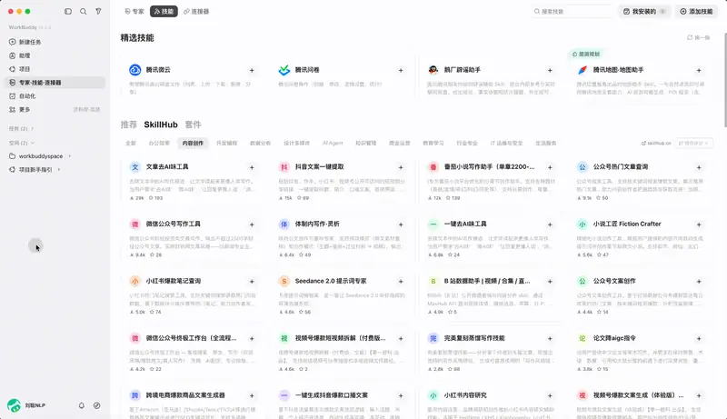
你只需要引用Skill内容，把文章给到即可，
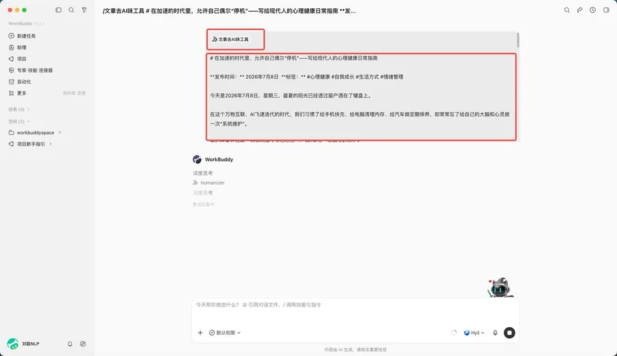
WorkBuddy 会先加载skill的内容，
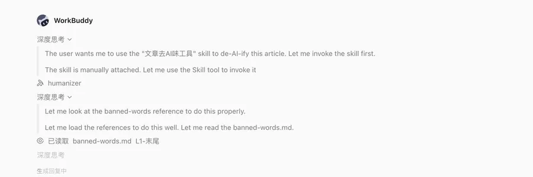
根据skill中的规则，来执行，比如要去除不是而是、双引号等内容，
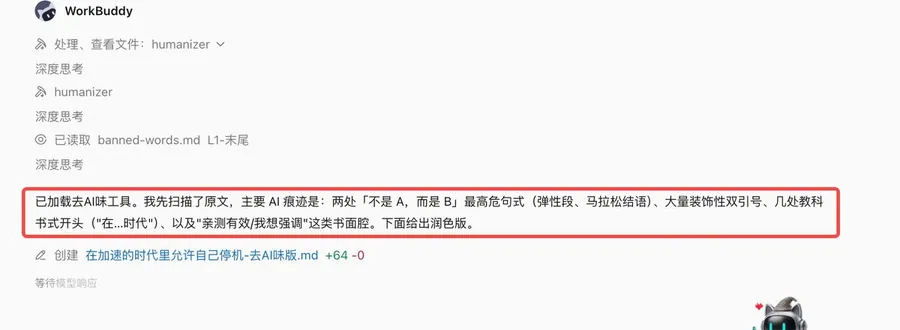
修改之后，可以得到结果，确实去除了AI味。
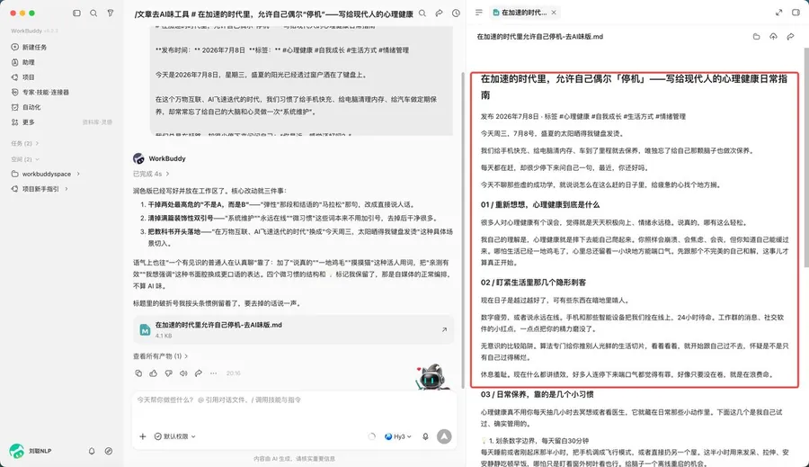
Skill的关闭和卸载
从全部技能中，点击我安装的
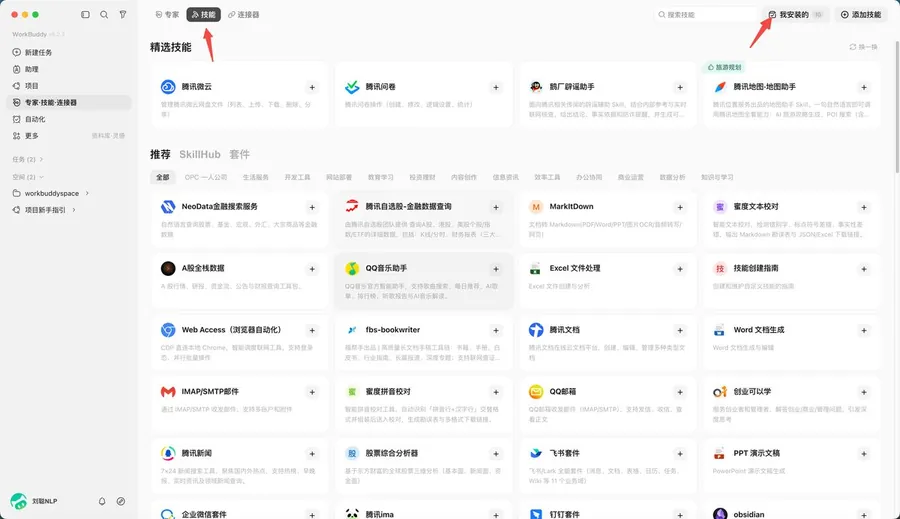
按钮关闭（则关闭该Skill）
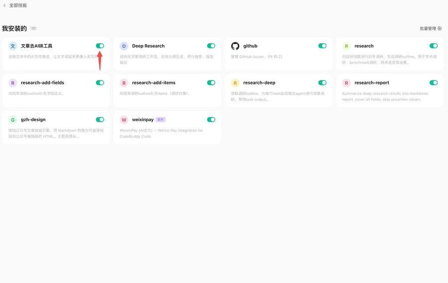
点击“···”，可以选择删除或编辑该Skill
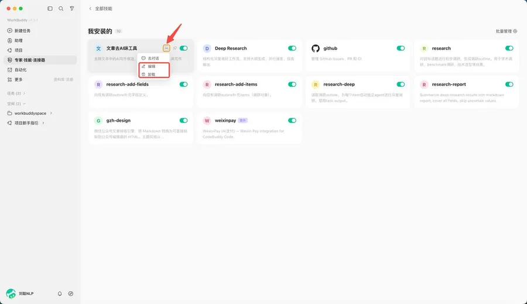
专家和专家团与Skill的区别
WorkBuddy 本身是一个通用 Agent，什么任务都能接。但通用不意味着每个领域都应该用同一种方式处理。
比如，
同样是分析一份销售数据，普通 Agent 可能会读取数据、生成图表、总结趋势。数据分析专家会先理解业务目标，再确定核心指标，检查数据质量，寻找异常变化，分析可能原因，最后给出可以执行的业务建议。
同样是写一篇小红书文案，普通 Agent 可能更关注内容本身。小红书运营专家还会考虑选题、标题、开头留存、种草逻辑、平台内容生态和互动设计。
专家定义为一种角色切换机制，通过人设、方法论和工具链，让 WorkBuddy 以特定领域专家的身份执行任务。
最简单的理解是：
普通 WorkBuddy = 通用 AI 同事
专家 = 有明确岗位和专业经验的 AI 同事
而专家团定义为一种协作执行机制。一个专家团由多位专家组成，由团长自动拆解任务、分配工作、并行执行，最后整合交付。
用户只需要告诉团长客户背景、最新需求和预期成果，不需要自己挑选团员，也不需要自己拆分任务。团长会安排内容、活动、分析等成员协作，最后汇总完整方案。
| 方式 | 本质 | 适合的问题 |
|---|---|---|
| 普通任务 | 通用理解与执行 | 一次性的清楚任务 |
| Skill | 特定工具能力 | 需要稳定执行某个动作 |
| 专家 | 人设 + 方法论 + 工具链 | 明确领域的单点专业问题 |
| 专家团 | 多位专家 + 协作流程 | 需要拆解、并行、汇总的复杂项目 |
召唤一位专家
- 打开“专家·技能·连接器”，选择“专家”；
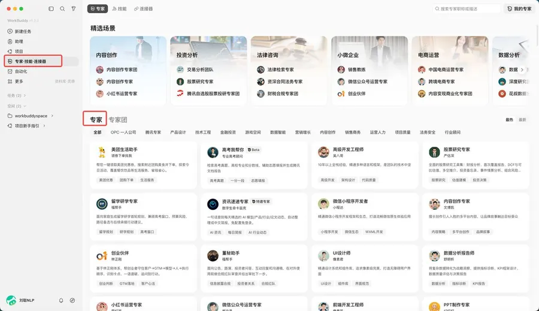
- 点击“召唤专家”；以“高考我帮你”专家举例
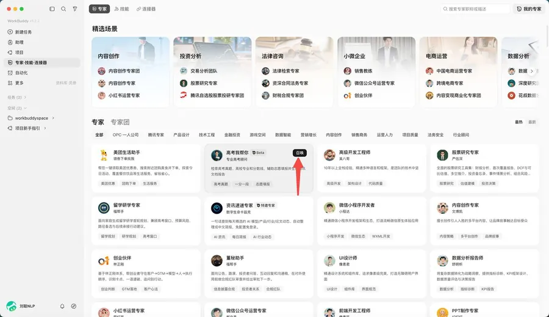
- 提供任务内容，比如“帮我查一下2026年高考数学真题”
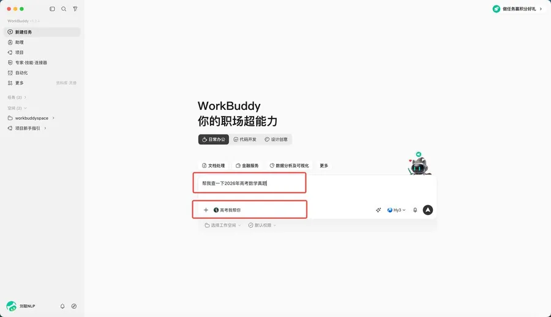
- 等待结果
创建一位专家
点击我的专家，创建专家，即可
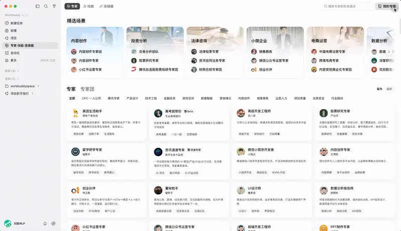
比如创建一个公众号创作专家，
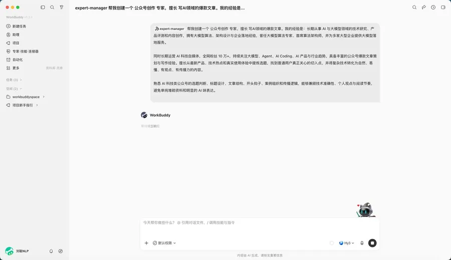
生成结束，可以测试
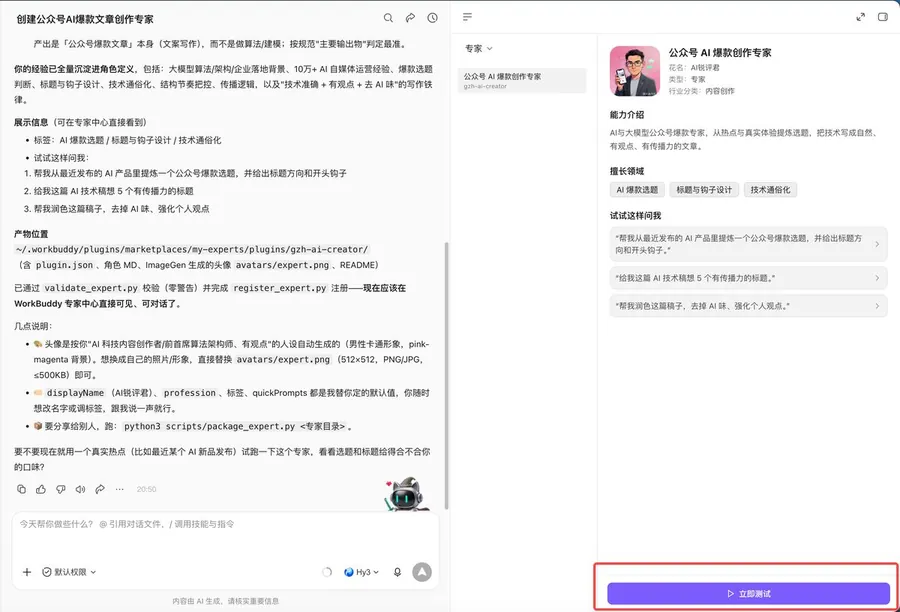
在我的专家中，也可以找到。
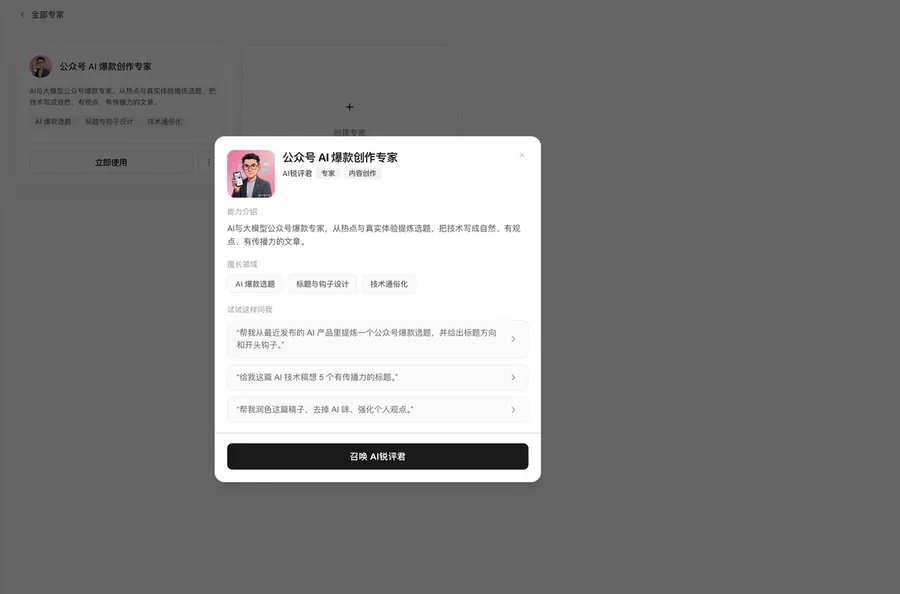
召唤一个专家团
专家团由团长负责拆解和汇总，成员按角色并行或串行执行。任务开始前先确认：成员分工是否覆盖完整、哪些步骤依赖前一步、什么时候需要人来拍板、最终由谁整合。
打开“专家·技能·连接器”，选择“专家团”，点击召唤
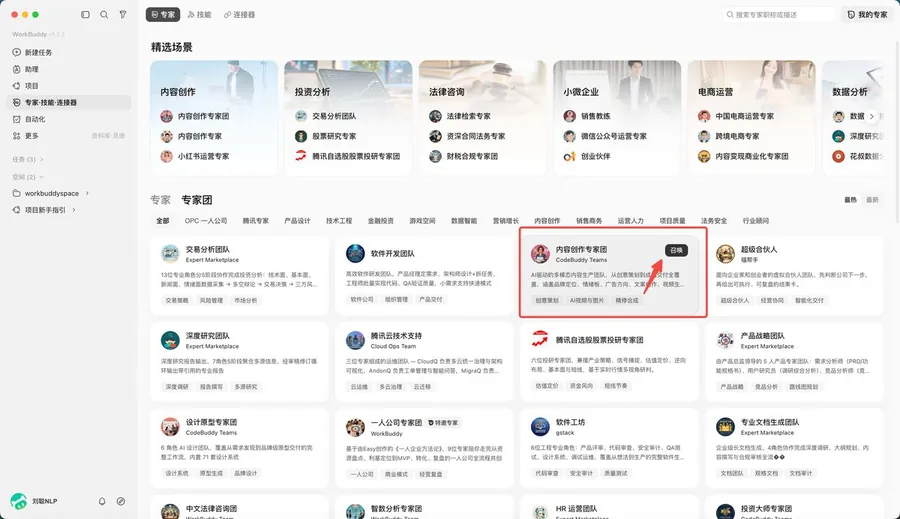
MCP指的是 **Model Context Protocol（模型上下文协议），**是由 Anthropic 于 2024 年底推出并开源的一个开放标准协议，目前已经成为 AI 领域最热门的基础设施之一。
用一个通俗的比喻：MCP 就是 AI 世界的“USB-C 接口”。
为什么需要 MCP？
在过去，如果你想让一个 AI 助手（Agent）连接外部工具（比如 GitHub、本地文件系统、PostgreSQL 数据库、Slack 等），开发者必须为“每一个 AI 应用”和“每一个工具”编写专门的对接代码。如果有 10 个 AI 应用和 10 个工具，就需要写 100 个接口（N × M 的集成噩梦）。
有了 MCP，工具开发者只需要按照 MCP 标准开发一个“MCP Server”（相当于 USB-C 设备），而任何支持 MCP 的 AI 应用（如 Cursor、各类 Agent 框架）只需内置“MCP Client”（相当于 USB-C 接口），就能即插即用。这就把 N × M 的复杂开发工作，简化成了 N + M。
MCP 的核心特点
- 统一的标准化协议（告别重复造轮子）
MCP 提供了一套通用的规范（基于 JSON-RPC）。无论是读取本地文件、查询数据库，还是调用第三方 SaaS API，AI 都能通过同一套协议逻辑去理解和调用。这大幅降低了 Agent 开发中工具集成的门槛，让开发者可以把精力集中在 Agent 的核心逻辑上，而不是写繁琐的 API 对接代码。
- 支持三大核心能力
MCP 不仅能让 AI “做事”，还能让 AI “看数据”和“按套路出牌”，它标准化了三种核心原语：
Tools（工具）：允许 AI 执行操作。例如：运行一段代码、在 Jira 创建一个任务、向数据库写入数据。
Resources（资源/上下文）：允许 AI 读取外部数据。例如：获取 Git 仓库的文件列表、查询向量数据库中的特定片段，作为回答问题的上下文。
Prompts（提示词模板）：提供预定义的交互模板，让用户或 AI 能以标准化的方式触发特定的复杂工作流。
C/S 架构与高度解耦，MCP 采用客户端-服务端（Client-Server）架构：
- MCP Host：你使用的 AI 宿主应用（如 IDE、Agent 平台）。
- MCP Client：Host 内部负责与 Server 保持 1:1 连接的组件。
- MCP Server：轻量级的独立程序，专门负责暴露特定工具或数据的能力。
这种解耦意味着你可以随时替换底层的大模型，或者随时增加新的数据源，而无需重构整个 Agent 系统。
- 本地优先与安全性（隐私友好）
MCP 支持通过本地标准输入输出（stdio）或本地 HTTP 进行通信。这意味着你的 MCP Server 可以完全运行在本地电脑上。敏感数据（如本地代码、私有数据库内容、电商后台数据）不需要上传到云端第三方服务器，AI 模型只在需要推理时获取必要的上下文，极大提升了企业级应用的数据安全性。
加载一个连接器
当前已支持 QQ 邮箱、腾讯文档、腾讯乐享、腾讯会议、TAPD 等连接器。
比如加载腾讯会议连接器，
创建一个任务
帮我创建一个明天下午 3 点的会议，
主题“项目讨论”，时长1h
创建成功
新建连接器
连接器管理页右上角点“自定义连接器”，按引导配置 MCP（含服务地址、鉴权方式），并提示自定义连接器的访问范围由用户配置
小程序的两种模式
| 模式 | 任务在哪里运行 | 是否依赖电脑在线 | 适合任务 |
|---|---|---|---|
| 本机模式 | 已连接的电脑 | 是 | 本地文件、本地 Skill、已有工作区 |
| 云端模式 | 隔离的云端环境 | 否 | 调研、写作、临时分析、并行任务 |
首次使用
- 通过官方入口打开 WorkBuddy 小程序并登录；
- 查看当前处于本机还是云端模式；
- 本机模式下确认目标电脑在线且连接正确；
IM 助理的工作链路
sequenceDiagram
participant U as 手机 IM
participant B as 应用机器人
participant W as WorkBuddy 助理
participant P as 本机工作区
U->>B: 发送任务
B->>W: 回调或长连接传递消息
W->>P: 在授权目录执行
P-->>W: 产物与状态
W-->>B: 返回结果
B-->>U: 手机查看与确认
接入微信助理：扫码绑定即可
- 打开 WorkBuddy，在左侧“助理”栏点击齿轮，进入“助理设置”；
- 找到“微信助理集成”，点击“配置”；
- 等待绑定二维码生成，用手机微信扫码；
- 卡片显示“已绑定”后，先发送一条只读测试指令；
- 需要切换微信账号时，先解绑当前账号，再重新扫码。
二维码有时效限制。停留在“绑定中”、二维码过期或扫码失败时，关闭配置窗口后重新进入，必要时重启 WorkBuddy 并重新生成二维码。
来源：WorkBuddy 官方指南。
接入飞书
- WorkBuddy → 设置 → 助理设置 → 选择飞书；
- 在飞书开放平台创建企业自建应用；
- 为应用添加机器人能力；
- 按 WorkBuddy 当前页面要求开通最小权限；
- 在“凭证与基础信息”获取 App ID 和 App Secret；
- 将凭证填写到 WorkBuddy，生成或复制回调信息；
- 在飞书配置事件订阅与回调；
- 添加接收消息、卡片交互等当前指南要求的事件；
- 创建版本并发布应用；
- 在飞书内向机器人发送只读测试任务。
来源：WorkBuddy 官方指南。
接入钉钉
- 创建应用与机器人使用企业管理员账号登录钉钉开发者后台；
- 进入“应用开发”，创建应用；
- 为应用添加机器人能力，填写机器人名称、描述和头像并确认发布；
- 优先在测试组织或测试群完成验证。
来源：WorkBuddy 官方指南。
你也许没有积分，但是你有自己的LLM API，
WorkBuddy支持接入其他 LLM 的 API，以及 Coding Plan、Token Plan 等套餐。
直接从设置中进入，
选择模型选项，
点击添加模型，
可以选择各种coding plan或者自定义的api
比如，DeepSeek，你只需要输入api key即可，
或者接入本地ollama模型，需先本地启动 Ollama（默认端口 11434，OpenAI 兼容接口），本地模型优势为数据不出本机、可离线、零 Token 成本。
真正消耗人的，往往不是那些需要创造力的大任务，而是每天都要打开同样的页面、收集相似的信息、整理成同一种格式，再把结果发给同一批人。WorkBuddy 自动化的价值，就是把这些“时间固定、步骤相似、结果可检查”的工作变成可重复运行的 Agent 任务。
为什么 WorkBuddy 可以自动化
传统自动化通常要求人先把每一个步骤写成代码：打开哪个系统、点击哪个按钮、读取哪一列、遇到异常怎么分支。
WorkBuddy 的不同之处，是把“定时调度”与 Agent 的理解、工具调用和文件处理能力组合起来。你不必把所有细节都写成程序，但需要把目标、输入、边界和结果说清楚。
自动化配置保存在本地客户端，包括任务名称、提示词、调度规则、工作目录和执行状态。到达设定时间后，WorkBuddy 会沿用当前登录身份发起 Agent 任务，并按提示词调用模型、Skill、MCP 或连接器，在指定工作目录完成查询、汇总和文件处理。
真正让任务稳定运行的是五个要素：明确的触发时间、可重复的输入来源、足够具体的 Prompt、固定且受控的工作目录，以及能够判断成功或失败的验收条件。
自动化能用来做什么
最直观的用途是把每天、每周、每月都要重复的工作交给 WorkBuddy。价值不只在于少点几次鼠标，而在于任务不会因为忙碌而被遗忘，执行方法也不会随着不同的人临时变化。
| 场景 | 可以自动完成 | 典型产物 |
|---|---|---|
| 资讯与情报 | 定时搜索行业新闻、政策、竞品动态，去重后摘要 | 每日简报、风险提示、来源清单 |
| 日报与周报 | 汇总任务、日历、文档和数据变化，按固定结构生成报告 | 日报、周报、项目进度表 |
| 数据与表格 | 收集文件、合并表格、清洗字段、检查缺失和异常 | 对账表、异常清单、趋势图 |
| 文件管理 | 按日期和项目归档、批量重命名、抽取 PDF 或图片文字 | 归档目录、索引、处理日志 |
| 内容运营 | 收集选题、生成标题候选、整理素材、制作发布草稿 | 选题库、内容草稿、封面需求单 |
| 知识管理 | 定时整理收藏、会议纪要和灵感，补标签与来源 | 知识卡片、每周回顾、待消化列表 |
| 产品与研发 | 巡检日志、汇总 issue、检查依赖和构建结果 | 巡检报告、缺陷摘要、升级建议 |
| 个人事务 | 生成学习计划、阶段复盘、预约或提醒类任务 | 学习清单、提醒、执行记录 |
什么样的任务适合先自动化
可以用下面六个问题做判断。回答“是”越多，越适合作为第一批自动化任务：
- 会重复吗：至少每周发生一次，而不是一次性需求；
- 输入稳定吗：文件夹、网页、表格或连接器来源相对固定；
- 步骤相似吗：虽然内容变化，但处理方式基本一致；
- 结果可验收吗：能检查条数、字段、时间范围、来源或文件是否生成；
- 失败可恢复吗：失败后可以重跑，不会立即造成不可逆损失；
- 权限可控制吗：可以限定工作目录、账号和允许调用的工具。
最适合的起点，通常不是“替我运营整个公司”，而是“每天 8 点收集 10 条 AI 行业新闻，去重、保留链接，生成 Markdown 简报到指定目录”。范围越清楚，越容易发现问题并逐步改进。
从一句想法到可运行任务
创建自动化前，先把口头需求改写成一份小型任务说明。一个可靠的 Prompt 至少要回答：何时执行、读取什么、怎样处理、输出到哪里、怎样算完成、失败后怎么办、哪些动作禁止执行。
任务名称：每日 AI 行业简报
触发时间：每天 08:00，时区 Asia/Shanghai
工作目录：automation/ai-daily
输入：
- 检索过去 24 小时的 AI 产品、模型和行业新闻
- 仅使用可以访问并保留链接的公开来源
处理规则：
1. 合并重复事件，按产品、技术、商业三类整理
2. 每条包含标题、100 字摘要、来源、发布时间和链接
3. 无法确认发布时间或来源的内容放入“待核验”，不要编造
输出：
- 保存为 YYYY-MM-DD-ai-daily.md
- 正文最多 10 条，最后附来源清单创建一项自动化任务
在 WorkBuddy 打开“自动化”页面，可以查看已安排任务和历史执行记录。点击“添加”后，需要配置任务名称、工作空间、提示词、模型与技能、定时规则，以及是否把完成结果推送到 WorkBuddy 小程序。

| 配置项 | 作用 | 填写建议 |
|---|---|---|
| 名称 | 区分不同自动化任务 | 写清对象和频率，如“每日 AI 简报” |
| 工作空间 | 限定执行目录和文件保存位置 | 为每项自动化使用独立目录，避免互相覆盖 |
| 提示词 | 描述目标、步骤、输出和边界 | 使用上面的任务模板，不只写一句口号 |
| 模型和技能 | 决定可用的理解与执行能力 | 只选择任务真正需要的 Skill 和连接器 |
| 定时规则 | 设置频率和生效日期 | 先低频试运行，再逐步提高频率 |
| 推送到小程序 | 完成后在手机查看结果 | 开启前确认哪些结果会通过安全链路同步到云端 |
点击“自动化”，
“添加自动化”，就可以自定义你的任务
比如，每日AI资讯新闻推送，定时8点发送
不想从零写 Prompt，可以先用模板
官方任务模板覆盖新闻推送、周报生成、体检预约和学习计划等常见场景。模板的价值是提供基本字段和任务结构，但它不是最终答案。选用后仍应修改数据来源、时间范围、输出位置、验收标准和禁止动作。
更多值得尝试的自动化场景
| 任务 | 触发方式 | 建议保留的人工检查 |
|---|---|---|
| 周报汇总 | 每周五读取本周任务、日历和交付文件 | 确认进度和风险表述后再发送 |
| 销售日报 | 每天汇总 CRM 或表格中的新增客户与跟进记录 | 核对金额、客户状态和负责人 |
| 费用与发票整理 | 每月读取指定目录中的票据和报销表 | 财务提交前核对税额、重复票据和归属 |
| 自媒体选题雷达 | 每天收集热点、行业话题和评论区问题 | 人工判断品牌立场和是否追热点 |
| 知识库周回顾 | 每周整理新增笔记、收藏和会议纪要 | 确认分类、来源和是否值得长期保留 |
| 项目风险巡检 | 每天检查延期任务、构建结果和错误日志 | 严重告警交由负责人确认处置 |
| 竞品价格监控 | 定时读取公开页面或授权 API | 页面结构变化时暂停并修复解析规则 |
| 学习计划复盘 | 每天提醒，周末汇总完成情况 | 根据真实精力调整下周计划 |
办公三件套是多数人第一次感受到 WorkBuddy 价值的地方。
该章节聚焦三类最常见的办公产物：Word 文档、Excel 表格和 PPT 汇报。
办公三件套的共同工作流
无论文档类型是什么，都建议先把任务拆成五个问题。很多“AI 做得不好”的办公任务，根源不是模型不会写，而是人没有把交付标准说清楚。
| 问题 | 要说清什么 | 示例 |
|---|---|---|
| 目标 | 这份材料要帮助谁做什么决定 | 给部门负责人看，用于判断项目是否继续投入。 |
| 受众 | 阅读者是谁，懂不懂背景 | 管理层只看结论；项目组需要过程和责任人。 |
| 材料 | 哪些文件是事实来源，哪些只是参考 | data.xlsx 是唯一数据口径，旧版 PPT 只参考结构。 |
| 格式 | 要 Word、Excel、PPT，还是三者联动 | 输出一份项目复盘 Word、一张风险台账 Excel、一份 8 页汇报 PPT。 |
| 验收 | 怎么判断结果可用 | 数字能回到源文件，表格公式可刷新，PPT 投屏不溢出。 |
先选对 Skill：办公任务的推荐组合
SkillHub上有很多办公效率、文档处理、表格处理、PPT 生成和会议纪要相关技能。
| Skill 名称 | 适合处理 | 本章怎么用 | 注意点 |
|---|---|---|---|
| Word / DOCX | Word 文档 | 创建、检查、编辑 DOCX，处理标题、编号、表格、修订记录。 | 适合本地 docx 文件。 |
| Excel / XLSX | Excel 表格 | 读取、清洗、写入工作簿，处理公式、日期、格式和模板保留。 | 先确认数据口径。 |
| Powerpoint / PPTX | PPT 文件 | 创建、编辑、检查 PPTX，处理版式、占位符、备注、图表和视觉质检。 | 适合需要可编辑 PPTX 的场景。 |
| Office Document Specialist Suite | Word / Excel / PPT | 综合处理 Office 文件，适合自动化报告和多文件联动任务。 | 复杂任务建议分步验收。 |
| wps | WPS 三件套 | 面向中国用户的 WPS Office 工作流，覆盖文字、表格、演示。 | 适合 WPS 生态用户。 |
| 腾讯文档 TENCENT DOCS | 在线文档协作 | 创建、读取、编辑、搜索腾讯文档，覆盖在线 Word、Excel、幻灯片。 | 通常需要 API Key 或授权。 |
| kdocs skill | 金山文档 / WPS 云文档 | 处理 WPS 云文档、智能文档、表格、PPT、PDF、知识库。 | 通常需要 API Key。 |
| Markdown Converter | 材料解析 | 把 PDF、Word、PPT、Excel 转成 Markdown，方便模型先理解内容。 | 适合读材料，不等于最终排版。 |
| PPT Generator / PPT Workflow | PPT 生成 | 从主题、讲稿或材料自动生成演示稿，适合初稿和结构化汇报。 | 生成后仍要人工审稿。 |
| PowerPoint Automation | PPT 批改与导出 | 读取大纲、导出 PDF/图片、替换文字、统一字体和主题。 | 更适合 Windows + PowerPoint/WPS。 |
| Excel公式生成 | 公式问题 | 把自然语言转换为 Excel/WPS/Google Sheets 公式，并解释防错版本。 | 公式要在样例数据上验证。 |
| 腾讯会议 | 会议到文档 | 预约会议、获取转写、获取 AI 纪要，再转成 Word 纪要、Excel 待办、PPT 汇报。 | 需要会议平台授权。 |
一个实用的搭配思路是：本地文件优先用 Word / DOCX、Excel / XLSX、Powerpoint / PPTX；在线协作优先用 腾讯文档 或 kdocs skill；材料很多时先用 Markdown Converter 抽取结构；会议类办公流再叠加 腾讯会议 或会议纪要类 Skill。
Word：从空白页到正式文档
这个场景的痛点
Word 看起来只是写字，但真实办公里的难点通常有四个：不知道该按什么结构写、语气不够正式、标题和编号混乱、内容没有证据来源。
尤其是方案、通知、报告、会议纪要、制度、申请、PRD 这类文档，如果开头就让 AI 自由发挥，结果往往像“万能模板”，读起来完整，却很难直接提交。
WorkBuddy 适合解决的不是“替你拍脑袋”，是把已有材料变成结构稳定、语气一致、可以继续修改的文档初稿。
要把文档目标、提交对象、语气和结构要求一次说清楚；生成后再用差异化反馈继续修改，而不是每次从头生成。
适合交给 Word 的任务
- 正式方案：活动策划、项目方案、营销方案、培训方案。
- 管理文档：制度、通知、申请、会议纪要、复盘报告、周报月报。
- 产品材料：PRD、需求说明、竞品分析、用户访谈总结。
推荐流程
| 步骤 | WorkBuddy 做什么 | 人要确认什么 |
|---|---|---|
| 1 | 读取材料，列出可用信息和缺失项。 | 哪些材料是事实来源，哪些只是参考。 |
| 2 | 生成文档大纲和写作口径。 | 读者是谁，文档是汇报、审批还是执行。 |
| 3 | 按大纲生成 Word 初稿。 | 标题层级、章节顺序、关键信息是否完整。 |
| 4 | 根据反馈润色、补充、删减。 | 哪些内容可以定稿，哪些必须标“待确认”。 |
| 5 | 输出可编辑 docx 和修改说明。 | 是否能直接发给同事审阅。 |
提示词示例：生成一份团建活动策划 Word
帮我生成一份公司团建活动策划的 Word 文档框架。
公司约 80 人，包含：活动目标、活动主题建议、整体流程安排（含时间节点）、分组与互动游戏建议、预算构成清单、人员分工、风险预案和注意事项。
语言简洁实用，不需要写得过于详细，重点把整体框架和关键决策项列清楚，适合直接拿去和领导确认活动方向。二次修改不要重写，要说差异
请在上一版公司团建活动策划 Word 文档基础上进行修改，不要重新生成整篇。
修改要求：
将活动目标压缩为 3 条，每条不超过 50 字；
将流程安排改成表格，列为：时间、环节、主要内容、负责人、所需物料；
在节目类型建议中增加适合 100 人规模公司的互动环节，并删除执行难度过高的方案；
将预算构成进一步细化，增加：预算项目、预计金额、数量、单价、备注，并补充预算总额；
新增风险预案部分，覆盖人员迟到、设备故障、节目超时和突发安全问题；
整体语言更加正式、简洁，适合直接提交给领导审批。
输出修改后的 v2 版 Word 文档，并在 changelog.md 中列出本次修改内容。进阶实战：比较两版制度、合同或方案
比较 policy-v3.docx 与 policy-v4.docx。
输出新增、删除、修改和仅格式变化四类差异，附章节和原文定位。
重点标记金额、日期、责任主体、审批条件、例外和否定表达。
生成影响清单和待确认问题，不给法律结论，不修改原文件。文档对比适合发现变化，不替代法务、财务或制度责任人的最终判断。
Excel：把表格变成能回答问题的分析
这个场景的痛点
Excel 的问题通常不在“会不会做图”，而在“这个表到底能回答什么问题”。
很多表格混着日期、文本、空值、合并单元格、多个口径和临时备注，直接让 AI 分析，很容易得到一份看似专业、其实没有业务价值的图表。
建议先导入 Excel 或 CSV，再一次说明分析指标、图表类型、统计维度、时间范围和是否需要报告。这个顺序很重要：先定义业务问题，再决定图表，而不是先生成漂亮图。
适合交给 Excel 的任务
- 数据清洗：去重、补空值、统一日期格式、拆分字段、合并多个表。
- 经营分析：销售额、利润率、转化率、客单价、续费率、库存周转。
- 报表生成：周报、月报、预算执行、考勤汇总、项目进度台账。
- 公式辅助：生成或解释复杂公式，排查
#N/A、#VALUE!、循环引用。 - 可视化：柱状图、折线图、饼图、透视表、仪表盘、异常点提示。
推荐流程
| 阶段 | 提示重点 | 输出 |
|---|---|---|
| 读表 | 先描述工作簿结构、字段含义、样例行和明显脏数据。 | 数据字典、问题清单。 |
| 定指标 | 说明要回答的业务问题，而不是只说“分析一下”。 | 指标口径表。 |
| 清洗 | 说明空值、重复值、异常值如何处理。 | 清洗后的 xlsx / csv。 |
| 计算 | 生成公式、透视表或统计表，并保留可刷新结构。 | 汇总表、公式说明。 |
| 可视化 | 根据业务问题选择图表，避免图表堆砌。 | 图表、分析结论。 |
提示词示例：销售数据分析
请读取 电商销售数据.xlsx，先不要修改原文件。
业务问题：分析本月各产品线的销售表现和盈利能力，判断哪些产品线贡献高、哪些利润表现较弱，并识别本月销售过程中的异常波动。
请输出：
说明数据字段含义，并检查缺失值、重复记录、异常值和字段格式问题；
按产品线统计销售额、毛利、毛利率、销售额占比和毛利贡献占比，并进行排名；
按日汇总销售额和毛利率，分析本月销售表现的日度变化；如果数据跨度和完整性允许，再补充按周统计；
生成柱状图对比各产品线销售额和毛利，生成折线图展示本月每日销售额变化；
识别销售额、毛利率或单笔订单金额明显异常的日期或记录，并结合数据说明异常表现，不要在缺少依据时推测业务原因；
总结本月表现最好的产品线、需要重点关注的产品线，以及 3 条可直接用于业务复盘的结论。
输出 output/sales-analysis.xlsx 和 output/summary.md。
要求：保留原始数据，统计过程和公式可追溯；图表标题直接表达主要结论；无法从数据中确认的原因明确标注为待核实，不要自行编造。进阶实战：多表合并、对账与异常清单
基础办公中最有价值的不是“做个图表”，而是把数据口径和异常暴露出来：
合并 input/sales 中 6 个区域的周销售表。
先检查列名、数据类型、日期范围、币种和主键，不一致时停止并列差异。
按订单号去重，但保留重复来源；汇总前输出总行数、空值、异常值和重复数。
生成 clean-sales.xlsx、exception-list.xlsx 和 reconciliation.md。
金额汇总必须与各源表合计对账，差异不为 0 时不生成管理结论。验收：输入总量、清洗变化和输出总量守恒；公式可重算；异常没有被静默删除；图表使用的字段和汇总表一致。
PPT：不是套模板，而是把材料变成叙事
这个场景的痛点
PPT 最容易被误用。
很多人把任务写成“帮我做一份高级感 PPT”，结果 AI 只能猜风格，生成一堆好看的空话。真正可用的 PPT 必须先回答三个问题：这次汇报给谁看、对方听完要做什么决定、你有多少时间讲。
PPT 生成强调同时提供素材、页数要求、受众对象和风格偏好。对 WorkBuddy 来说，PPT Skill 可以负责页面生成，但故事线必须先确认。否则页面越漂亮，越容易掩盖逻辑问题。
适合交给 PPT 的任务
- 项目汇报：项目进展、阶段复盘、里程碑计划、风险与资源请求。
- 经营汇报：月度经营分析、销售复盘、预算执行、用户增长复盘。
- 培训课件：新人培训、产品培训、客户培训、内部分享。
- 方案展示：客户方案、竞标材料、商业计划、产品发布。
推荐流程
| 步骤 | WorkBuddy 做什么 | 人要确认什么 |
|---|---|---|
| 1 | 把 Word、Excel、图片、旧 PPT 转成材料摘要。 | 哪些内容必须保留，哪些可以删。 |
| 2 | 生成 6-10 页故事线和每页标题。 | 汇报对象、时长、决策目标。 |
| 3 | 根据确认后的大纲制作 PPT。 | 每页是否只有一个核心观点。 |
| 4 | 补图表、备注、来源映射和导出版本。 | 关键数字是否来自 Excel。 |
| 5 | 做版式检查：文字溢出、图片缺失、字号、颜色。 | 投屏后是否能读，是否适合现场讲。 |
提示词示例：从材料包制作汇报 PPT
请根据当前工作区材料制作一份 8 页以内的 AI Agent 主题分享 PPT。
受众：对 AI 有基础认知，但不了解 Agent 的业务和管理人员。
汇报时长：10 分钟。
目标：让听众理解 AI Agent 是什么、与普通 AI 对话工具有什么区别、能解决哪些问题，以及企业应该如何判断是否值得落地。
素材：
AI术语全景手册.md 是主要内容材料；
不要补充工作区材料之外的事实和数据。
全文控制在 8 页以内，每页只表达一个核心结论；
案例、数据和关键判断必须标注素材来源，无法确认的内容不要自行补充；
PPT 标题尽量直接表达观点，不使用 AI Agent 介绍、应用场景这类泛化标题；
输出 output/ai-agent.pptx；
生成后检查文字溢出、页面留白、图表口径、图片缺失、字体一致性和页码。
整体风格：专业、简洁、有科技感，但不要过度使用渐变、发光和装饰性元素，适合正式分享和内部汇报。三件套联动案例：会议之后自动形成交付包
很多办公任务不是单文件，而是“会议之后要有东西”。
比如开完一次产品评审会，会议里有用户反馈、功能决策、待办事项和下个版本计划。手工做法通常是：先整理纪要，再补 PRD，再做任务表，最后做汇报 PPT。
WorkBuddy 的价值就在于把这些交付物串成同一条事实链。
场景痛点
- 会议讨论是口语化的，决议、分歧和待办混在一起。
- PRD 需要结构化，但会议纪要里没有标准格式。
- Excel 任务表需要负责人、截止日期和状态字段，不能只是一段总结。
- PPT 汇报需要给老板看，不能把会议全文搬进去。
可用 Skill 组合
| 环节 | 推荐 Skill | 作用 |
|---|---|---|
| 获取会议内容 | 腾讯会议 / 智能会议纪要类 Skill | 获取转写、AI 纪要、决议、行动项。 |
| 生成 PRD | Word / DOCX、腾讯文档、kdocs skill | 把会议内容改写成产品需求文档。 |
| 生成任务表 | Excel / XLSX、Excel/WPS 表格自动化工具 | 输出负责人、截止日期、优先级、状态和验收标准。 |
| 生成汇报 | Powerpoint / PPTX、PPT Workflow、PPT Generator | 把 PRD 和任务进度转成管理层汇报。 |
提示词示例：会议到 PRD、任务表、汇报
请读取本次产品评审会议的转写和 AI 纪要，生成一个办公交付包。
目标：把会议内容转成可以推进研发的材料。
请输出：
1. Word：output/feature-prd.docx，包含背景、目标用户、核心问题、需求列表、流程说明、验收标准、风险和待确认问题；
2. Excel：output/action-items.xlsx，字段包含事项、负责人、优先级、截止日期、依赖、状态、验收标准；
3. PPT：output/review-summary.pptx，6 页以内，面向管理层，突出本次会议决议、资源请求和风险。
约束：
- 会议中没有明确确认的内容，不要写成既定结论；
- 人名、日期、功能范围必须保留来源；
- 如果缺少负责人或时间，请标为待确认；
- 先输出大纲和任务表字段预览，等我确认后再生成文件。常见错误与修正方式
| 常见错误 | 为什么会发生 | 更好的写法 |
|---|---|---|
| “帮我做个 PPT，要高级一点” | 没有受众、目标和材料约束。 | 说明受众、汇报时长、页数、决策目标、参考模板和必须保留的数据。 |
| “分析一下这个 Excel” | 没有业务问题，模型只能泛泛总结。 | 说明要回答什么问题、统计哪些指标、按什么维度比较。 |
| “写一份报告” | 没有文档类型和语气要求。 | 说明是方案、总结、申请、纪要还是 PRD，并指定读者。 |
| “全部自动完成，不用问我” | 关键口径没确认，风险会被放大。 | 先让 WorkBuddy 输出材料清单、风险清单和大纲，确认后再生成。 |
| “把这堆材料合成一个文件” | 没有区分事实、参考和待确认。 | 指定唯一数据源、参考文件和不能编造的字段。 |